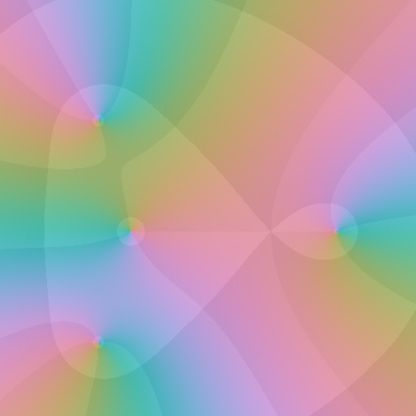
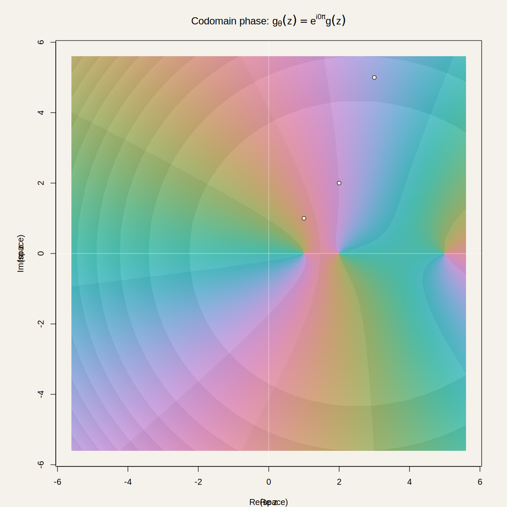

Place zeros and poles
Add factors directly to the portrait. Opposite factors cancel one-for-one at the same location.

WegertComplex analysis you can touch
Interactive Wegert phase portraits of rational functions. Place zeros and poles, drag them through the complex plane, pan, zoom, and watch the portrait respond immediately.
v0.1.50 prerelease · test-only signing key

g(z) = (z − 1)(z − 2)(z − 5)Direct manipulation
Wegert keeps the interaction close to the mathematics: factors are visible objects, movement changes the function, and the portrait responds immediately.
Add factors directly to the portrait. Opposite factors cancel one-for-one at the same location.
Move existing factors with one finger. Drag empty portrait space to move the visible complex domain.
Use ordinary touch gestures to move through ℂ while the mathematical coordinates remain authoritative.
The formula overlay follows the same zeros and poles as the portrait, including denominator factors.
Domain colouring
Hue records the phase of the function. Lightness varies with log modulus, repeating across magnitude decades. Zeros and poles become structures you can see instead of coordinates you only calculate.
Read the colour core →Android
The current prerelease is an installable test APK. The repository also contains the source, Android packaging, host-side tests, emulator smoke tests, and rendering provenance.
Open source
The readable C and GLSL are kept in the repository alongside the mathematical and rendering contracts.
Build and packaging support stays separate under _.
cd _/build
gradle :app:assembleDebug